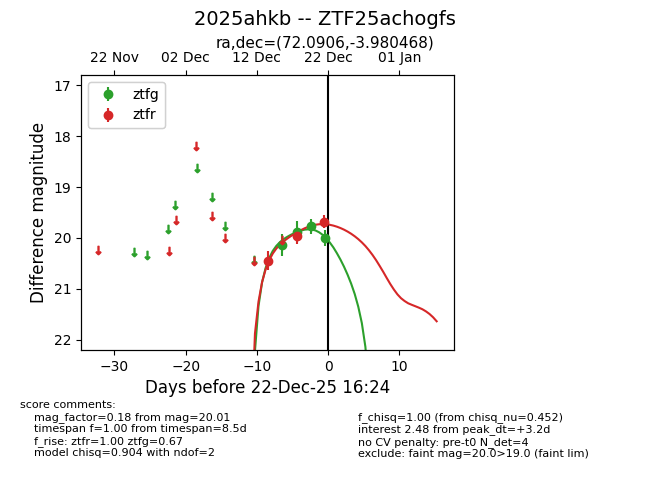
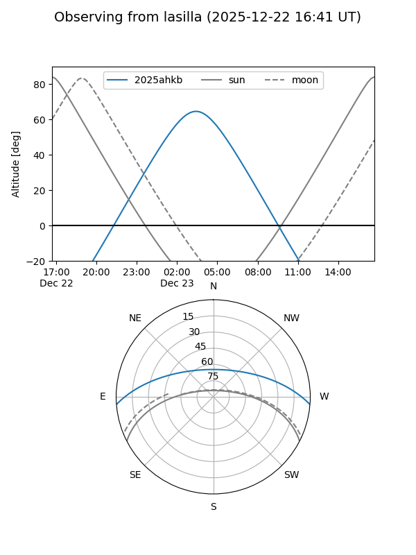
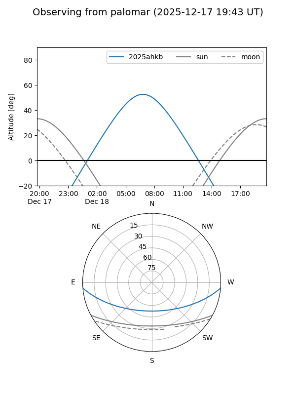
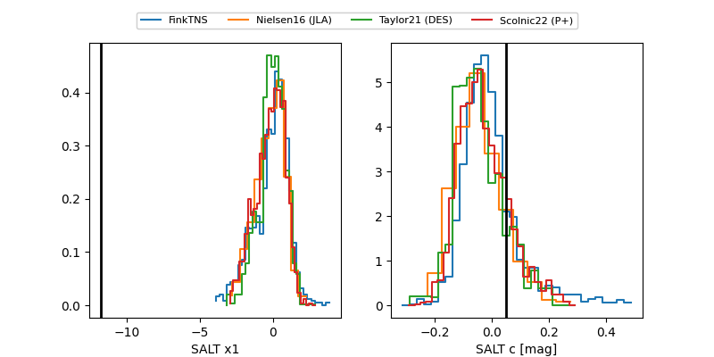

2025ahkb
Target 2025ahkb at 2025-12-22 16:26
Aliases and brokers:
FINK: fink-portal.org/ZTF25achogfs
Lasair: lasair-ztf.lsst.ac.uk/objects/ZTF25achogfs
ALeRCE: alerce.online/object/ZTF25achogfs
TNS: wis-tns.org/object/2025ahkb
YSE: ziggy.ucolick.org/yse/transient_detail/2025ahkb
alt names
ZTF25achogfs (ztf,fink_ztf)
2025ahkb (tns,yse)
Coordinates:
equatorial (ra, dec) = 72.0906,-3.98047
equatorial (HMS+DMS) = 04:48:21.74,-03:58:49.68
galactic (l, b) = (201.6544,-29.06827)
Flags:
Photometry:
last ztfg=20.01, ztfr=19.68
4 ztfg, 3 ztfr detections
Lightcurve

Visibility


Additional plots
